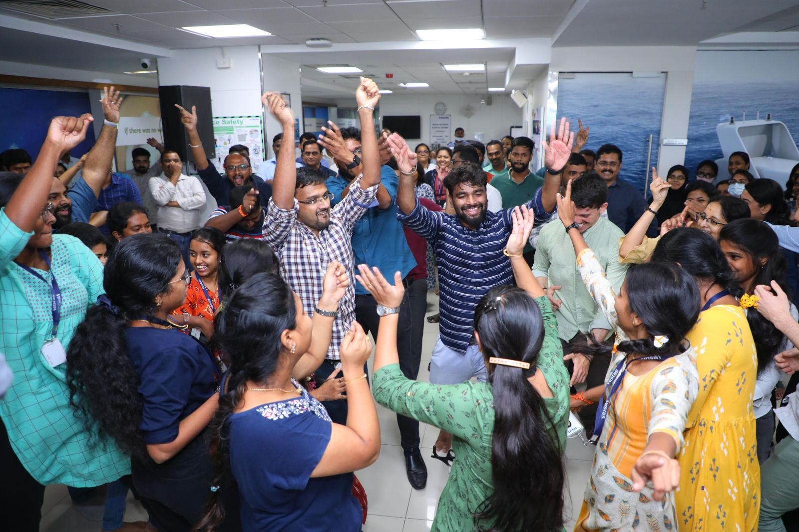
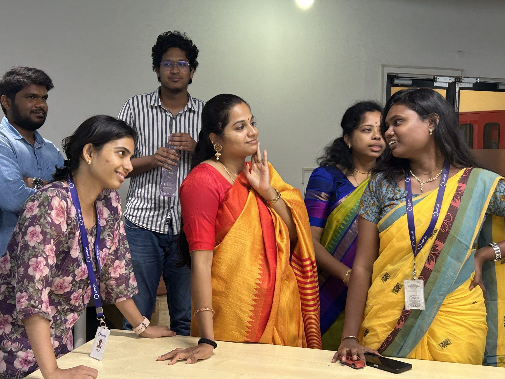

Employee engagement activities7 to 12 minutes. Right at your work bay.
Employee engagement activities that come to your people. Our team walks into your workspace and delivers a short, high-energy moment of joy, without pulling anyone off the floor.

No disruption
Work carries on. Joy drops in, then gets out of the way.
Zero prep for you
We plan, bring and run everything. You just tell people to look up.
A steady rhythm
A consistent, recurring cadence people start looking forward to.
One partner. Every moment.
Festivals
Diwali, Pongal, Ramzan, Christmas and more, celebrated together, with care for every culture on your floor. Office celebrations →
World days
World Magic Day, World Sunglasses Day, World Joke Day. The unexpected keeps it fresh.
Wellbeing & causes
Mental health, Earth Day, Yoga Day. Engagement with meaning.
Employee appreciation
Rewards & recognition, company anniversaries, talent shows and sports meets. Recognition that feels personal, not procedural.
Twelve minutes. Big feelings.
Unscripted moments from a recent Navratri celebration, right at the desks.




365 days. Plenty of reasons to smile.
Beyond the regulars like Pongal, Diwali and Christmas, here are the mad, wacky days we use to keep your people engaged all year. Each one is a 7 to 12 minute moment, right at the work bay.
January01
- Pongal / Makar Sankranti14 Jan
- Compliment Day24 Jan
- Republic Day26 Jan
- Fun at Work Daylast Fri
February02
- Pizza Day9 Feb
- Galentine's & Pal-entine's13 Feb
- Random Acts of Kindness Day17 Feb
- Tell a Fairy Tale Day26 Feb
March03
- Women's Day8 Mar
- HoliMar
- Ramzan & EidFeb / Mar
- International Day of Happiness20 Mar
April04
- April Fools' Day1 Apr
- World Health Day7 Apr
- Pet Day (bring the photos)11 Apr
- Earth Day22 Apr
May05
- Labour Day1 May
- Star Wars Day4 May
- World Laughter Day1st Sun
- Mother's Day2nd Sun
June06
- World Environment Day5 Jun
- Father's Day3rd Sun
- International Yoga Day21 Jun
- World Sunglasses Day27 Jun
July07
- World Joke Day1 Jul
- World Emoji Day17 Jul
- Ice Cream Day3rd Sun
- Friendship Day30 Jul
August08
- Happiness Happens Day8 Aug
- Independence Day15 Aug
- Raksha BandhanAug
- OnamAug / Sep
September09
- Teachers' Day (thank a mentor)5 Sep
- Ganesh ChaturthiSep
- Programmers' Day13 Sep
- Talk Like a Pirate Day19 Sep
October10
- Coffee Day1 Oct
- World Mental Health Day10 Oct
- Navratri & DussehraOct
- World Magic Day & Halloween31 Oct
November11
- DiwaliOct / Nov
- World Kindness Day13 Nov
- Children's Day (bring your kid)14 Nov
- Gratitude Weeklast week
December12
- Cookie Day4 Dec
- Ugly Sweater Day3rd Fri
- Christmas & Secret Santa25 Dec
- New Year's Eve31 Dec
Festival dates move with the lunar calendar each year. We'll map exact dates for your year when we plan together.
Plan once. Smile all year.
- We map your year against the Joy Calendar
- You pick the moments that fit your culture and budget
- We design, deliver and run every one, across all your offices
- You get the photos, the stories and the participation numbers
Good to know.
What are employee engagement activities?
Planned moments that help people enjoy work and feel part of the team: festival celebrations, fun days, wellbeing moments and recognition. Ours are short, 7 to 12 minute moments delivered right at the work bay.
How do you celebrate festivals like Diwali, Pongal and Christmas at the office?
We bring the festival to your floor with decor, games and shared moments that include every culture in the room. See our office festival celebrations.
How do we plan employee engagement for the whole year?
We map your year on the Joy Calendar, you pick the moments that fit your culture and budget, and we design and run every one.
Can you run engagement across multiple offices?
Yes. We design, deliver and run engagement across all your offices, and send you the photos, stories and participation numbers.
Let's make your people colorful.
Tell us about your team, your calendar and your next big moment. We'll come back within one working day.